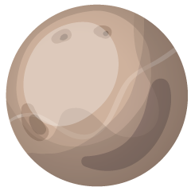

Space

There is: what it's named after, the size size, moon count, planet from the sun, and more!
Murcury
Murcury named after the roman god of messangers, thieves, etc. It is the smallest planest and slightly larger the the moon. It is also the closest. 59 earth days is 1 Murcury day and a year is 175.97 earth days. The atmosphere is made of O2, Na, H2, He and K. It also has no moons and rings
Venus
Venus is named after the roman god of love and beauty. It has no moons and no rings like Murcury. It is the second planet from the sun. It is about 900°F, That is hot enough to melt lead! It's winds blow very fiercely, at hurracane speed
Earth
Earth is the only planet in the solar system not named after a mythoalagy god/goddess/titan it is the only planet in the habitable zone. It is the fifth largest planet and the only planet with liquid water. Earth is a Germanic word which means the ground. It is the third planet from the sun. Earth has only 1 moon which is not a lot compared to other planets. The atmosphere breaks many meteoroids that are striking earth
Mars
Mars is named after the roman god of war. It is the fourth planet and the last terrestrial Planet. It has two moons called Phobos and Deimos. It's atmosphere is mostly CO2, Ar and N2
Jupiter
Jupiter is named after the roman god of the sky. It is the largest planet and the first gas giant. It is the fifth planet from the sun. a day is 10 hours but 12 earth years is one year. It is mostly the two lightest elements: Hydrogen(1.008) and Helium(4.003). It's Great Red Spot is a giant storm.
Saturn
Saturn is named after the roman titan of time. It is the second gas giant and sixth planet from the sun. The air is mostly H2 and He. It has a total of 82 moons and it has 7 rings. The diameter is about 9 times of earths
Uranus

Uranus is named after the primordial god of the sky in greek mytholagy. It has 27 known moons and maybe more! Atmosphere of mostly H2. It also rotates on its side. There are a lot of rings, 13 to be exact. It is very large, about 4× as large. It is also the 7th planet pf the solar system
Neptune

Neptune is named after the roman god of the sea. It is the last planet and last ice giant. 16 hours is one day but 165 earth years is one neptune year! It has 14 moons named after greek nymphs and greek sea gods. Itt has 5 main rings and 4 of them are arcs. it is 2.8e9 miles(28000000000 miles)
Pluto
Pluto is named after the roman god of the underworld. It used to be a planet but scientists discovered that it is too small to be a planet so now it is a dwarf planet.